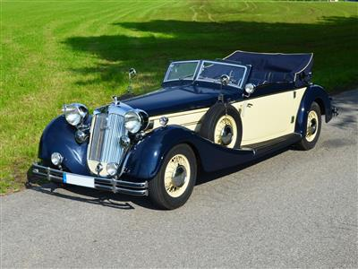

Technische Daten
- Baujahr: 1935
- Hubraum: 4944 cm³
- Leistung: 120 PS
- Höchstgeschwindigkeit: 135 km/h
- Getriebe: 4-Gang manuell
- Sitzplätze: 4
- Gewicht: 2400 kg
Oldtimer Video
Beschreibung
Der Horch 853 ist ein luxuriöser Sportwagen aus den 1930er Jahren, bekannt für seine beeindruckende Leistung und sein elegantes Design. Er war ein Prestigeobjekt seiner Zeit und wurde für seine Zuverlässigkeit und Handwerkskunst geschätzt.
Der Wagen verfügt über eine 8-Zylinder-Reihenmotor-Konfiguration und war besonders beliebt bei wohlhabenden Automobilenthusiasten. Das elegante Cabriolet-Design machte ihn zu einem Highlight auf den Straßen.